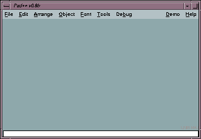
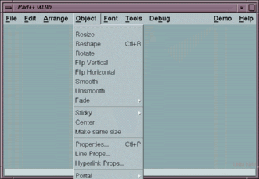
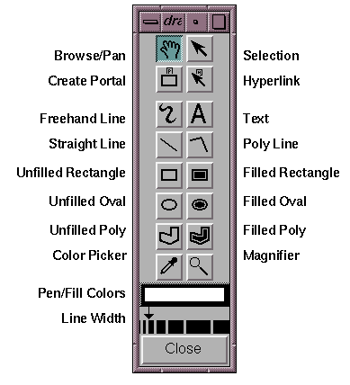

Getting Started with PadDraw
Jonathan Meyer, April 1997
Introduction
PadDraw is a zoomable drawing application written using the Pad++
widget. It shares a lot of features with Adobe Illustrator (and other
similar drawing programs), but in addition it supports smooth
real-time zooming of graphics, and it has a number of effects and
tools that are useful for constructing interesting presentations and
multimedia content.
Unfortunately, the documentation on PadDraw is still rather sparse,
and there is as yet no user guide. We are working on one of these.
This document gives some brief instructions to help you get started
with PadDraw. It is aimed at people who are comfortable with using
graphical user interfaces and computer drawing packages.
If you have used other drawing applications, many of the features in
PadDraw will be familiar to you. We aim to produce more comprehensive
documentation on PadDraw-specific features.
Main Window
You start PadDraw by typing paddraw to the Unix command prompt:
unix% paddraw
When you start PadDraw, you should see a main Window that looks like:

(Your window is probably larger than this!)
The main window is divided into three areas - the menubar across the top,
the work area, and the status line across the bottom.
Menu Bar
Across the top of the main window is a menubar. Below you can see a
snapshot of one of the menus (the "Tools" menu) being activated:

We will come back to the menu bar later in this document. First, lets
try drawing some shapes.
Drawing Tools
You can draw shapes using tools on the drawing tools palette. Choose
"Drawing" from the "Tools" menu to make this palette available. The
following diagram shows the tools on the drawing tools palette.

Trying them out
Try drawing a freehand line. Choose "Drawing" from the "Tools" menu,
then click on the curvy line (or "Freehand") tool. Now move your mouse
pointer into the main work area, press the left mouse button and drag the
mouse with the left mouse button held down. A freehand shape should
appear. Release the left mouse button to stop drawing.
When you release the left mouse button, PadDraw automatically switches
to the Selection tool (the top right icon on the drawing tools
palette) and selects the object. You can see when objects are selected
because they are shown with small resize handles around the object. You
can use these resize handles to adjust the size of the object.
To unselect the object, click on some unused drawing
space. Alternatively, switch to the Pan tool (the top left icon on the
drawing tools palette), or to another drawing tool.
Try out some of the other shape tools - e.g. the rectangle tool or the
oval tool.
Zooming In PadDraw
A significant difference between PadDraw and other drawing
applications is that zooming controls are bound to mouse buttons.
PadDraw has the following mouse bindings:
- Left mouse button
- The action performed by this button depends on the tool that is
currently active (see "Drawing Tools" above), and on the object that the
mouse is over.
- Middle mouse button
- Zooms in.
- Right mouse button
- Zooms out.
On a system with a two button mouse, pushing both buttons together at
the same time simulates the middle mouse button (i.e. left button is
mode dependent, right button zooms out, left+right button together
zooms in.
The zoom-in and zoom-out buttons can be used to either zoom a whole
view or individual objects.
When nothing is selected, the zoom buttons zoom the whole view.
If you have selected some objects using the selection tool, the zoom
buttons zoom just those objects.
Trying it Out
First draw some shapes using the drawing tools.
Then click on the Pan tool in the drawing tools palette (the top left
icon). Then move your pointer into the main window.
- To pan the view, move your mouse pointer so that it is over some
blank space in the main window. Then press the left button and drag
the mouse with the left button held down. When you press the mouse
button, its as if you have grabbed the surface that the objects are
placed on - moving the mouse pulls the surface in the direction that
you moved. To stop panning, release the left mouse button.
- To zoom in, place the mouse pointer over one of the shapes you
drew. Then push the middle mouse button. As long as you hold the mouse
button down, the shapes get larger. Notice that PadDraw keeps the
shape you are zooming in on under the pointer. Zooming in Pad is like
operating a home video camera. You point at the thing you are interested
in and push the zoom in button - the system automatically zooms in at a
smooth rate as long as you hold the button down.
- To zoom out, press the right mouse button. As long as you hold the
button down the system will continue to zoom out. To stop zooming, release
the right mouse button.
- Choose the Selection tool. Now select a shape and experiment with
pressing the zoom-in and zoom-out buttons. Notice that when a shape is
selected and you push the zoom buttons, only that shape is zoomed.
If you get lost
If you want to return to a known location, choose "Navigation" from
the "Tools" menu. Then click on "Go Home". This takes you to PadDraw's
initial starting view.
In PadDraw, a particular view of the world is described using three
numbers: the x coordinate of the center of the view, the y coordinate
of the center of the view, and a zoom factor. For example, the home
location in PadDraw is "0 0 1" - i.e the center of the screen is the
coordinate 0, 0 and things are shown at magnification factor 1
(i.e. everything is 1:1 - not magnified at all).
If you click on "Get View" in the Navigation Tools window, you can see the
coordinates of the current view in the main window. For example, try zooming
in a little, then push Get View. You will notice that the third number
is larger - indicating that you are magnifying things. Now zoom out
and click on Get View. The third number is smaller - you are shrinking
things.
You can also type three numbers into the text box beside the "Get View"
button. When you type in three numbers and hit return, PadDraw navigates
the main window to show the view that you asked for.
Menu Operations
Below you will find some brief notes on each of the menus in PadDraw.
We encourage you to experiment - there are many little features in
PadDraw that we haven't had time to document.
- File
- Options on this menu let you save the current contents of the
PadDraw main window to a file, and restore previously saved PadDraw
sessions from a file. You also use this menu to import images and
HTML documents into PadDraw.
The "Starting view" sub-menu option on
the File menu is used to tell PadDraw what view to show users when a
file is first opened.
- Edit
- This menu provides the usual Cut/Copy/Paste/Delete
operations, and a limited Undo facility.
- Arrange
- Each objects in PadDraw has a stacking order - objects
can be in front of or behind other objects. The Arrange menu lets you
change the stacking order by raising or lowering objects that are
currently selected with the Selection tool. The Arrange menu
is
also used to group and ungroup objects.
If you select an object and choose "Lock", it will become locked -
this means that in future you will not be able to select the object
using the Selection tool. You can use "Unlock All" to make all objects
selectable again.
The "Hide" option allows you to temporarily hide the objects that are
selected. Use "Show All" to make all hidden objects visible again.
- Object
- This menu provides options for modifying properties
of drawn shapes in PadDraw. We won't go through each option, but instead
list two important submenus:
The "Fade" submenu lets you set fade
points on objects. Select a drawn shape, and then choose "Fade" /
"When smaller". When you zoom out the object will disappear. Zoom back
in again and the object reappears. Now select another shape and choose
the "Fade" / "When larger" option. Now when you zoom in the object will fade
out, and zooming out again will make the object reappear.
The "Sticky" submenu lets you create sticky objects. Select an object,
then choose "Sticky" / "Sticky". Now click on the Pan tool and try panning the
view - notice that the sticky object does not pan and zoom with the rest
of the objects, but instead remains 'stuck' to the glass. Select the object
and choose "Sticky" / "Unsticky" to make the object behave normally
again.
- Tools
- The tools menu gives you access to the various tool windows
in PadDraw. We leave it to you to experiment with the tool windows. You
should look in particular at Drawing tools, Color tools, and Preferences.
- Debug
- This menu contains options used by the development team
to debug and test PadDraw.
- Demo
- We've populated this menu with various tests and demos
that we use during presentations. You should at least try the Web
Pages, the Poetry and the Chart Lens (slide the lenses over the
data charts by dragging their title bars). You may have to restart
PadDraw after some of these demos.
- Help
- The starts of a help menu.
More on the Drawing Tools
As well as the fairly standard drawing tools, the drawing tools palette
contains several more novel tools which we describe briefly below. We've
also included some other notes that we think you will find useful.
- Browse/Pan tool
- The pan tool (shown with a hand on the tool palette) lets you
pan the surface. But note that you also use the pan tool to click on active
objects such as hyperlinks and buttons.
- Portal tool
- The portal tool (the second tool down on the left hand
column) lets you draw out portals. Portals act as additional views
onto the Pad surface. To create a portal, first click on the portal
tool in the tool palette to make it the current tool. Then move the
pointer into the main window, press the left mouse button, and drag
the mouse with the left button held down. A portal (which looks like a
rectangular shape with a 3D border) should appear. Release the left
mouse button when the portal is the desired size.
You can pan and zoom inside a portal independently of the
main view. Choose the pan tool, move your mouse inside the portal's
border, and try panning or zooming. You should find that you can pan or
zoom inside the portal without changing the main window's view.
- Hyperlink tool
- The Hyperlink tool (the second tool down on the
right hand column) lets you create a link between a source object and
a destination object. First click on the hyperlink tool to make it the
current tool. Then click on the source object. Finally click on a
destination object. A yellow highlight line should be shown between
the two objects.
To try out the hyperlink, switch back to the pan tool. Then move the
pointer over the source object and click. The Pad surface should pan
and zoom so that the destination object fills the screen.
You can also use the hyperlink tool to link to a source object to a
particular view. Click on the hyperlink tool to activate it. Then click
on the source object. Navigate to the view you want as the destination
view (e.g. by panning or zooming) and hit the space bar. The object is
now linked to that view. Return to the pan tool and click on the source
object - the view should change to show the destination view.
- Text tool
- The text tool lets you create new text
objects. Simply click on the text tool to make it the current tool,
then click on an blank space in the PadDraw main window. A text cursor
appears, and you can now type in text. The text editor uses emacs-like
keybindings.
To edit text, first click on the text tool to make it the current
tool. Then move your mouse pointer over the text object you want to
edit and click on the object. A text cursor will appear, and you can
insert or delete text characters.
Where to go From Here
If you want to learn about programming Pad++, see reference.ps and
guide.ps.
You can also visit our web page at
www.cs.unm.edu/pad++.
Please feel free to experiment, and send any feedback or comments to
pad-comment@cs.unm.edu.
April 1997